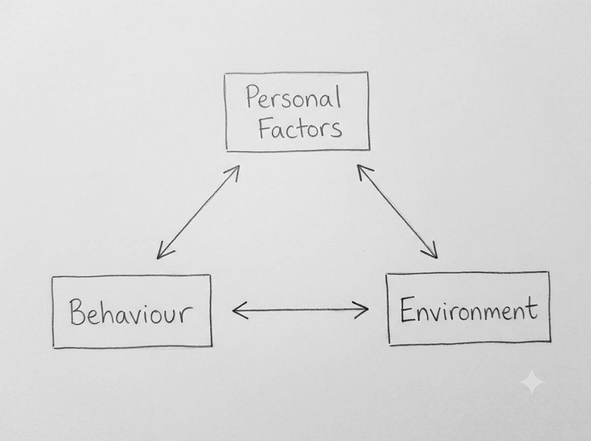

Q1. Explain Bandura's Theory of Reciprocal Determinism and Its Application to Cyber-Criminal Behavior.
Introduction
Bandura's Theory of Reciprocal Determinism explains that human behaviour is influenced by three factors:
- Personal Factors
- Behaviour
- Environment
According to psychologist Albert Bandura, these three factors continuously influence one another.
1. Three Main Factors of Reciprocal Determinism
a) Personal Factors
Personal factors include a person's thoughts, feelings, beliefs and motivations.
Example: A person may believe that online fraud is an easy way to earn money.
b) Behaviour
Behaviour refers to the actions performed by a person.
Example: Online fraud, illegal hacking, cyberbullying or digital piracy.
c) Environment
Environment includes the people and situations that influence a person.
Example: Friends, social media, online communities and hacker groups.
2. Reciprocal Relationship
The three factors continuously influence one another, as shown below.

For example, a person's beliefs may influence their online behaviour. Their behaviour may change their environment, and the environment may again influence their beliefs.
This continuous interaction is called reciprocal determinism.
3. Application to Cyber-Criminal Behavior
a) Personal Motivation
A person may commit cybercrime because of money, curiosity, revenge or recognition.
b) Influence of Online Environment
Friends or online groups may encourage a person to participate in cybercrime.
c) Learning from Others
A person may observe others committing cybercrime and copy their behaviour.
d) Rewards Encourage Repetition
If a person gains money or recognition from cybercrime, they may repeat it.
Conclusion
Bandura's Theory of Reciprocal Determinism explains that personal factors, behaviour and environment continuously influence one another. In cybercrime, personal motivations, online groups, learning from others and rewards can influence criminal behaviour.